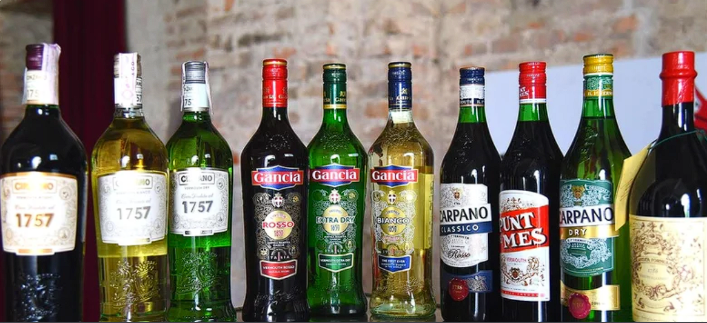

Throwing together drinks for your cocktail party may seem simple, but think again. We spoke to two experts who highlighted 8 mistakes you're probably making.

Drink
By Lily Greenall
Everything You've Ever Wanted To Know About Vermouth
Vermouth has a long history of appearing in cocktails such as the Manhattan and Negroni. But, there's much more you need to know about this fortified wine.
Drink
By Druv Trivedi
What To Keep In Mind When Freezing Liquid Coffee Creamer
Unsure what to do with extra coffee creamer? Freeze it! Learn how to store and revive it for later use, avoiding waste and enjoying convenience.